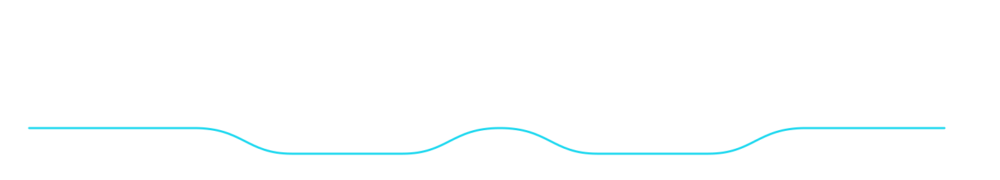
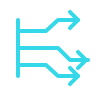
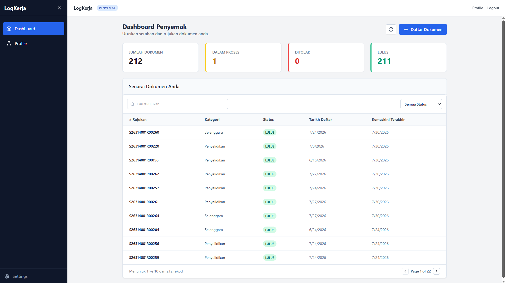

01
Tindakan berpusat
Status dan tindakan dokumen dilihat secara digital dan sistematik.

Pasukan di sebalik LogKerja
Mohd Nor Rizal Sulaiman
Pembantu Tadbir (N2)
Pejabat Timbalan Dekan Penyelidikan & Antarabangsa, FPSK
ZEKOP · Zero Cost Production
Sistem Notifikasi Tindakan Berpusat
Sistem sokongan operasi kepada Putra Finance bagi memusatkan makluman, semakan, pengesahan dan kelulusan dokumen.
01
Status dan tindakan dokumen dilihat secara digital dan sistematik.
02
Risiko arahan kerja tenggelam dalam komunikasi umum dikurangkan.
03
Jejak tindakan membantu kebolehkesanan dan akauntabiliti kerja.
Sumber: Objektif inovasi dalam Borang Penyertaan HKIP.
Sebelum LogKerja
Semakan manual perlu disusuli melalui WhatsApp, e-mel atau panggilan untuk memastikan tindakan dibuat.
Sumber: Gambar inovasi sebelum pelaksanaan, Borang Penyertaan HKIP.
Masalah sebenar
Prinsip penyelesaian
LogKerja mengarah tindakan kepada pihak yang bertanggungjawab, bukan sekadar memaparkan maklumat.
Satu perjalanan dokumen
Sumber: Blueprint LogKerja dan Borang Penyertaan HKIP.
Bukti selepas inovasi
Papan pemuka membantu melihat tindakan; jejak audit membantu menyemak perjalanan dokumen.
Sumber: Gambar inovasi selepas pelaksanaan, Borang Penyertaan HKIP.
Milestone yang disahkan sahaja
April 2025
Disember 2025
Februari 2026
Februari 2026
Februari 2026
Mac 2026
Mei 2026
Sumber: Milestone disahkan oleh pemilik projek. Tiada fasa tambahan ditunjukkan.
Pemerhatian operasi sebelum / selepas
Sumber: Pemerhatian operasi dan perbandingan proses kerja sebelum/selepas dalam pejabat. Bukan kajian akademik formal.
Pemerhatian operasi sebelum / selepas
Maksud impak
Kurang masa digunakanuntuk menyemak danmembuat susulan manual.
Angka menggambarkan keperluan operasi bagi pemantauan dokumen sebelum dan selepas pelaksanaan LogKerja.
Sumber: Pemerhatian operasi dan perbandingan proses kerja sebelum/selepas dalam pejabat.
Lebih daripada masa
Sumber: Paparan profil dan sejarah tindakan dalam Borang Penyertaan HKIP.
Impak kepada operasi
Sebelum
Maklumat dan susulan tersebar merentas saluran.
Selepas
Status dan tanggungjawab dilihat dalam aliran yang lebih tersusun.
Nilai
Akauntabiliti proses menjadi lebih mudah untuk dipantau.
Sumber: Penerangan impak dalam Borang Penyertaan HKIP. Tiada tuntutan kepuasan pengguna dibuat tanpa data khusus.

Tindakan tidak lagi bergantung sepenuhnya pada ingatan atau mesej peribadi.
Setiap pegawai melihat tindakan mengikut tanggungjawabnya.
Rekod tindakan menyokong ketelusan dan pemantauan kerja.
Sumber: Objektif dan impak inovasi dalam Borang Penyertaan HKIP.
Bukan hanya aplikasi
Peranan, kategori, routing dan jejak audit membantu menjadikan pengurusan tindakan lebih tersusun dari semasa ke semasa.
PEMILIKAN
PROSES
Asas kelestarian
pengurusan tindakan

Pengurusan tindakan yang
konsisten dan tersusun.
Sumber: Paparan tadbir urus dalam Borang Penyertaan HKIP dan Blueprint LogKerja.
Kenyataan skop yang tepat
LogKerja mempunyai potensi untuk disesuaikan dalam konteks lain yang menghadapi cabaran serupa.
Tiga perubahan utama
Rekod tersedia, tetapi tindakan tidak sentiasa jelas kepada pihak yang perlu bertindak.
Bukti impak praktikal kepada operasi harian.
Sumber: Pemerhatian operasi dan perbandingan proses kerja sebelum/selepas dalam pejabat.
Demo Ringkas
Lihat bagaimana nombor rujukan daripada Putra Finance didaftarkan, dikategorikan dan dipantau melalui satu aliran tindakan yang lebih jelas.
Gunakan hanya jika masa mengizinkan.

PUTRA FINANCE → LOGKERJASumber: Paparan dashboard LogKerja dalam Borang Penyertaan HKIP.
ZEKOP · ZERO COST PRODUCTION
Inovasi yang bernilai bermula apabila masalah kerja benar-benar difahami, lalu diubah menjadi tindakan yang lebihpantas, jelas dan bertanggungjawab.
SESI SOAL JAWAB← → tukar adegan · O ringkasan · F skrin penuh · P jeda masa